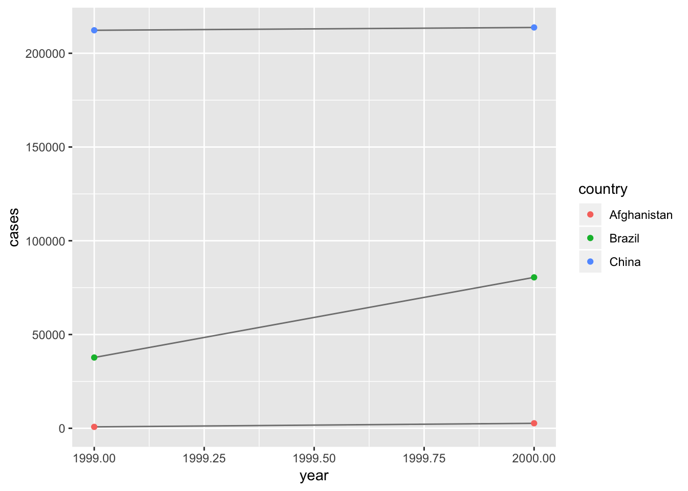
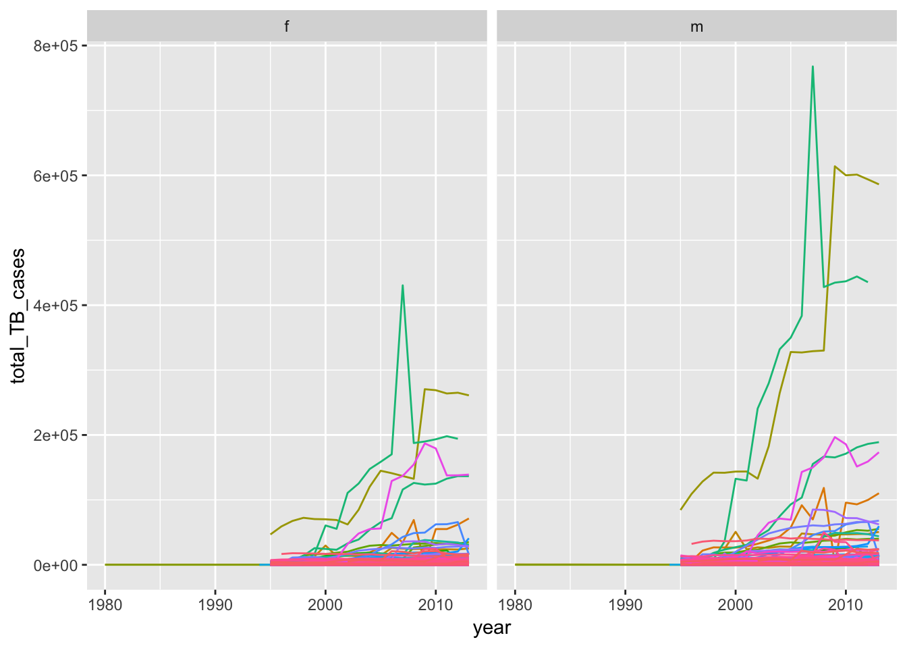
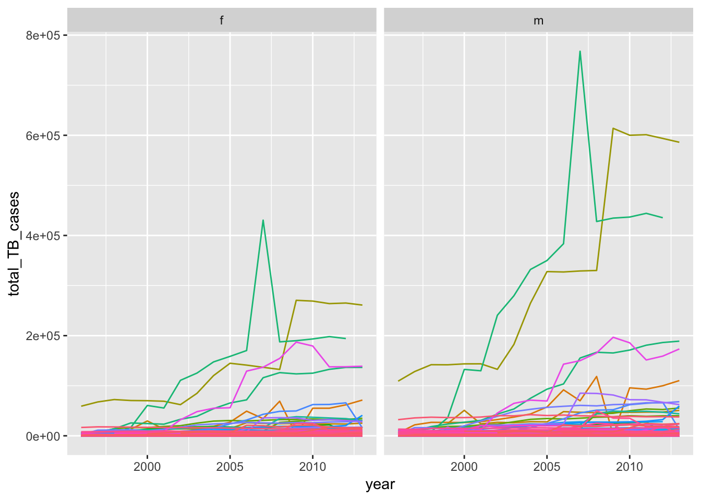

Chapter 12 Tidy Data
Below is the example provided by the book of the same data presented in 4 different ways. One way is tidy, the others are not!
table1## # A tibble: 6 x 4
## country year cases population
## <chr> <int> <int> <int>
## 1 Afghanistan 1999 745 19987071
## 2 Afghanistan 2000 2666 20595360
## 3 Brazil 1999 37737 172006362
## 4 Brazil 2000 80488 174504898
## 5 China 1999 212258 1272915272
## 6 China 2000 213766 1280428583table2## # A tibble: 12 x 4
## country year type count
## <chr> <int> <chr> <int>
## 1 Afghanistan 1999 cases 745
## 2 Afghanistan 1999 population 19987071
## 3 Afghanistan 2000 cases 2666
## 4 Afghanistan 2000 population 20595360
## 5 Brazil 1999 cases 37737
## 6 Brazil 1999 population 172006362
## 7 Brazil 2000 cases 80488
## 8 Brazil 2000 population 174504898
## 9 China 1999 cases 212258
## 10 China 1999 population 1272915272
## 11 China 2000 cases 213766
## 12 China 2000 population 1280428583table3## # A tibble: 6 x 3
## country year rate
## * <chr> <int> <chr>
## 1 Afghanistan 1999 745/19987071
## 2 Afghanistan 2000 2666/20595360
## 3 Brazil 1999 37737/172006362
## 4 Brazil 2000 80488/174504898
## 5 China 1999 212258/1272915272
## 6 China 2000 213766/1280428583# data spread across 2 tables
table4a # cases## # A tibble: 3 x 3
## country `1999` `2000`
## * <chr> <int> <int>
## 1 Afghanistan 745 2666
## 2 Brazil 37737 80488
## 3 China 212258 213766table4b # population## # A tibble: 3 x 3
## country `1999` `2000`
## * <chr> <int> <int>
## 1 Afghanistan 19987071 20595360
## 2 Brazil 172006362 174504898
## 3 China 1272915272 1280428583The three rules that must be satisfied for data to be “tidy” are:
- Each variable must have its own column.
- Each observation must have its own row.
- Each value must have its own cell.
Using these rules, the a tidy dataset from above is table1. The packages in the tidyverse such as ggplot2, dplyr, etc. are designed to work with tidy data, so we must learn how to reorganize data and clean it up in the event that we receive a dataset that is not tidy (which is very often).
12.2.1 Exercises
1. Using prose, describe how the variables and observations are organised in each of the sample tables.
- In table1, each of the variables are organized into columns, and each observation is in a separate row. Each row presents a unique combination of variables and respective observations, and each value has its own cell. This is considered a tidy dataset.
- In table2, each observation is in a separate row, but each variable does not have its own column. This is not a tidy dataset. To “tidy” this data, population and cases should be separated into individual rows, based on the count column. Count is not considered a variable. Rather, it is considered a value.
- In table 3, population and cases have been combined into a single column, “rate”. Note that this is not the actual value of the cases divided by the population (as you might obtain using a mutate()), rather it is a character listing the two separate items! If we had not known there were two variables combined into one column, we might have called this a tidy dataset. I would find a way to split the rate into cases and population, then use mutate() to calculate the rate.
- In table 4a and 4b, the data for population and cases have been split into two separate tables. The date variable is spread across the columns, and each row of each table represents an individual observation. The two tables have the same country column, and look like something you would see when working with relational data.
2. Compute the rate for table2, and table4a + table4b. You will need to perform four operations:
- Extract the number of TB cases per country per year.
- Extract the matching population per country per year.
- Divide cases by population, and multiply by 10000.
- Store back in the appropriate place.
Which representation is easiest to work with? Which is hardest? Why?
I will try doing the above operations without using tidyr functions.
For table2, we can first filter for the TB cases using filter(), then filter for the population per country using filter() as well. Then we can divide the two, multiply by 10000, and bind the results back to the original table2 by using cbind(). Since there are two rows in table2 corresponding to the same rate value, we must duplicate each rate twice using rep( each = 2 ) before binding to table2. This preserves the original structure of table2, and has the rate stored in the appropriate places. Using the spread() function in tidyr to generate tidy data and then using mutate() is much easier!
For table 4a and 4b, we can extract the 1999 values from each table and perform the rate calculation, and do the same thing for the 2000 values.Then, we can bind these rates back to both table4a and 4b using cbind. This preserves the original structure for both tables.
# perform the operations above for table 2a, without using spread()
rate_table2 <- ((filter (table2, type == 'cases')$count / # select cases
filter (table2, type == 'population')$count) * 10000) %>% # divide by populatoin
rep(each = 2) # repeat each element twice, maintaining the order of the vector
cbind(table2,rate_table2)## country year type count rate_table2
## 1 Afghanistan 1999 cases 745 0.372741
## 2 Afghanistan 1999 population 19987071 0.372741
## 3 Afghanistan 2000 cases 2666 1.294466
## 4 Afghanistan 2000 population 20595360 1.294466
## 5 Brazil 1999 cases 37737 2.193930
## 6 Brazil 1999 population 172006362 2.193930
## 7 Brazil 2000 cases 80488 4.612363
## 8 Brazil 2000 population 174504898 4.612363
## 9 China 1999 cases 212258 1.667495
## 10 China 1999 population 1272915272 1.667495
## 11 China 2000 cases 213766 1.669488
## 12 China 2000 population 1280428583 1.669488# using spread() and dplyr is more straightforward and results in tidy data.
table2 %>%
spread(key = type, value = count) %>%
mutate(rate = (cases / population) * 10000)## # A tibble: 6 x 5
## country year cases population rate
## <chr> <int> <int> <int> <dbl>
## 1 Afghanistan 1999 745 19987071 0.373
## 2 Afghanistan 2000 2666 20595360 1.29
## 3 Brazil 1999 37737 172006362 2.19
## 4 Brazil 2000 80488 174504898 4.61
## 5 China 1999 212258 1272915272 1.67
## 6 China 2000 213766 1280428583 1.67# perform the operations above for table 4a and 4b
rate_1999 <- (table4a$`1999` / table4b$`1999`)*10000
rate_2000 <- (table4a$`2000` / table4b$`2000`)*10000
cbind (table4a, rate_1999, rate_2000)## country 1999 2000 rate_1999 rate_2000
## 1 Afghanistan 745 2666 0.372741 1.294466
## 2 Brazil 37737 80488 2.193930 4.612363
## 3 China 212258 213766 1.667495 1.669488cbind (table4b, rate_1999, rate_2000)## country 1999 2000 rate_1999 rate_2000
## 1 Afghanistan 19987071 20595360 0.372741 1.294466
## 2 Brazil 172006362 174504898 2.193930 4.612363
## 3 China 1272915272 1280428583 1.667495 1.6694883. Recreate the plot showing change in cases over time using table2 instead of table1. What do you need to do first?
First, we need to tidy table2 so that we can use it with ggplot2, using the spread() function. Then, we can use the ggplot() function in the same manner as in the book example.
table2 %>%
spread(key = type, value = count) %>%
ggplot(aes(year, cases)) +
geom_line(aes(group = country), colour = "grey50") +
geom_point(aes(colour = country))
12.3.1 Spreading and Gathering
If some column names are not names of variables, but rather values of variables, it will be helful to “gather” these columns into a single column and map the values accordingly. For example, table4a and table4b has values for 1999 and 2000 split across multiple columns. To gather the values, use gather() by specifying the names of the columns to gather, and the names of the variable that is being gathered (key) and the value (value) that is being redistributed.
table4a %>%
gather(`1999`, `2000`, key = "year", value = "cases")## # A tibble: 6 x 3
## country year cases
## <chr> <chr> <int>
## 1 Afghanistan 1999 745
## 2 Brazil 1999 37737
## 3 China 1999 212258
## 4 Afghanistan 2000 2666
## 5 Brazil 2000 80488
## 6 China 2000 213766table4b %>%
gather(`1999`, `2000`, key = "year", value = "population")## # A tibble: 6 x 3
## country year population
## <chr> <chr> <int>
## 1 Afghanistan 1999 19987071
## 2 Brazil 1999 172006362
## 3 China 1999 1272915272
## 4 Afghanistan 2000 20595360
## 5 Brazil 2000 174504898
## 6 China 2000 1280428583When an observation is spread across multiple rows, as in table2, you can spread the data into multiple columns such that each row contains data from a single observation. In table2, each observation is considered a country in a year. Cases and populations for each country/year observation can be split from the type column into their own columns.
spread(table2, key = type, value = count)## # A tibble: 6 x 4
## country year cases population
## <chr> <int> <int> <int>
## 1 Afghanistan 1999 745 19987071
## 2 Afghanistan 2000 2666 20595360
## 3 Brazil 1999 37737 172006362
## 4 Brazil 2000 80488 174504898
## 5 China 1999 212258 1272915272
## 6 China 2000 213766 128042858312.3.3 Exercises
1. Why are gather() and spread() not perfectly symmetrical? Carefully consider the following example:
stocks <- tibble(
year = c(2015, 2015, 2016, 2016),
half = c( 1, 2, 1, 2),
return = c(1.88, 0.59, 0.92, 0.17)
)
stocks## # A tibble: 4 x 3
## year half return
## <dbl> <dbl> <dbl>
## 1 2015 1 1.88
## 2 2015 2 0.59
## 3 2016 1 0.92
## 4 2016 2 0.17stocks %>%
spread(year, return)## # A tibble: 2 x 3
## half `2015` `2016`
## <dbl> <dbl> <dbl>
## 1 1 1.88 0.92
## 2 2 0.59 0.17stocks %>%
spread(year, return) %>%
gather("year", "return", `2015`:`2016`)## # A tibble: 4 x 3
## half year return
## <dbl> <chr> <dbl>
## 1 1 2015 1.88
## 2 2 2015 0.59
## 3 1 2016 0.92
## 4 2 2016 0.17(Hint: look at the variable types and think about column names.)
There are a couple differences between the unmodified stocks tibble and the spread and gathered tibble. The spread and gathered stocks tibble has the columns ordered differently. Also, the the types of each column have changed. The original tibble had 3 columns of type
Both spread() and gather() have a convert argument. What does it do?
If set to TRUE (the default is FALSE), then the function type.convert() with asis = TRUE will be run on each of the new columns in the spread() or gather() output. This will try to convert the columns to variables of the appropriate type. For example, using convert = TRUE on the example above causes the year column to become an
stocks %>%
spread(year, return) %>%
gather("year", "return", `2015`:`2016`, convert = TRUE)## # A tibble: 4 x 3
## half year return
## <dbl> <int> <dbl>
## 1 1 2015 1.88
## 2 2 2015 0.59
## 3 1 2016 0.92
## 4 2 2016 0.172. Why does this code fail?
# table4a %>%
# gather(1999, 2000, key = "year", value = "cases")
#> Error in combine_vars(vars, ind_list): Position must be between 0 and nThe code fails because the variables passed into gather(), 1999 and 2000, are not written correctly. They should be encased in backticks, like this: 1999 and 2000. The code below works.
table4a %>%
gather(`1999`, `2000`, key = "year", value = "cases")## # A tibble: 6 x 3
## country year cases
## <chr> <chr> <int>
## 1 Afghanistan 1999 745
## 2 Brazil 1999 37737
## 3 China 1999 212258
## 4 Afghanistan 2000 2666
## 5 Brazil 2000 80488
## 6 China 2000 2137663. Why does spreading this tibble fail? How could you add a new column to fix the problem?
people <- tribble(
~name, ~key, ~value,
#-----------------|--------|------
"Phillip Woods", "age", 45,
"Phillip Woods", "height", 186,
"Phillip Woods", "age", 50,
"Jessica Cordero", "age", 37,
"Jessica Cordero", "height", 156
)
# spreading fails
#spread(people, key, value)
people2 <- tribble(
~name, ~key, ~value,
#-----------------|--------|------
"Phillip Woods", "age", 45,
"Phillip Woods", "height", 186,
"Phillip Woods2", "age", 50,
"Jessica Cordero", "age", 37,
"Jessica Cordero", "height", 156
)
spread(people2, key, value)## # A tibble: 3 x 3
## name age height
## <chr> <dbl> <dbl>
## 1 Jessica Cordero 37 156
## 2 Phillip Woods 45 186
## 3 Phillip Woods2 50 NApeople3 <- tribble(
~name, ~key, ~value, ~index,
#-----------------|--------|------|------
"Phillip Woods", "age", 45, 1,
"Phillip Woods", "height", 186, 1,
"Phillip Woods", "age", 50, 2,
"Jessica Cordero", "age", 37, 3,
"Jessica Cordero", "height", 156, 3
)
# works now
spread(people3, key, value)## # A tibble: 3 x 4
## name index age height
## <chr> <dbl> <dbl> <dbl>
## 1 Jessica Cordero 3 37 156
## 2 Phillip Woods 1 45 186
## 3 Phillip Woods 2 50 NASpreading the provided tribble fails because there is a duplicate value for the variables name and key. If I modify the second “Phillip Woods” value to “Phillip Woods2”, the spread() function works. If I add another column named “index” that identifies the unique sets of age and height, spread() also works. In any case, spread() requires a unique combination of variables to spread against.
4. Tidy the simple tibble below. Do you need to spread or gather it? What are the variables?
preg <- tribble(
~pregnant, ~male, ~female,
"yes", NA, 10,
"no", 20, 12
)I would need to gather the data. We can combine the male and female designation into a column called “gender”, and gather the 4 numerical observations into a column called “cases”. Below is the code required to do this.
preg %>%
gather(male, female, key = "gender", value = "cases")## # A tibble: 4 x 3
## pregnant gender cases
## <chr> <chr> <dbl>
## 1 yes male NA
## 2 no male 20
## 3 yes female 10
## 4 no female 1212.4 Separating and uniting
In table3, the data for population and cases are combined into one column, rate. To separate them, we can use the separate() function in tidyr. In the opposite case, the function unite() can be used to combine an observation split across multiple columns. Do not confuse unite() with gather()!
Separate() separates one column into multiple columns, by splitting based on a separator character. If the separator is the only non-numerical character for each observation, it does not have to be specified.
table3 %>%
separate(rate, into = c("cases", "population"))## # A tibble: 6 x 4
## country year cases population
## <chr> <int> <chr> <chr>
## 1 Afghanistan 1999 745 19987071
## 2 Afghanistan 2000 2666 20595360
## 3 Brazil 1999 37737 172006362
## 4 Brazil 2000 80488 174504898
## 5 China 1999 212258 1272915272
## 6 China 2000 213766 1280428583Similar to spread() and gather(), separate() has a convert argument that can try to convert the columns to the appropriate types. You can also specify the index to separate the values on, using a number instead of string value for the sep argument.
table3 %>%
separate(rate, into = c("cases", "population"), convert = TRUE)## # A tibble: 6 x 4
## country year cases population
## <chr> <int> <int> <int>
## 1 Afghanistan 1999 745 19987071
## 2 Afghanistan 2000 2666 20595360
## 3 Brazil 1999 37737 172006362
## 4 Brazil 2000 80488 174504898
## 5 China 1999 212258 1272915272
## 6 China 2000 213766 1280428583table3 %>%
separate(year, into = c("century", "year"), sep = 2)## # A tibble: 6 x 4
## country century year rate
## <chr> <chr> <chr> <chr>
## 1 Afghanistan 19 99 745/19987071
## 2 Afghanistan 20 00 2666/20595360
## 3 Brazil 19 99 37737/172006362
## 4 Brazil 20 00 80488/174504898
## 5 China 19 99 212258/1272915272
## 6 China 20 00 213766/1280428583Unite() is the opposite of separating, and will combine two columns together using a default underscore “_“. You can change the underscore to your choice of separator, using and empty”" if you do not wish to separate the values. The convert argument does not seem to work with this function in the example below.
# use default separator for unite()
table5 %>%
unite(new, century,year)## # A tibble: 6 x 3
## country new rate
## <chr> <chr> <chr>
## 1 Afghanistan 19_99 745/19987071
## 2 Afghanistan 20_00 2666/20595360
## 3 Brazil 19_99 37737/172006362
## 4 Brazil 20_00 80488/174504898
## 5 China 19_99 212258/1272915272
## 6 China 20_00 213766/1280428583# specify sep = "" to combine the two columns with no separation
table5 %>%
unite(new, century, year, sep = "")## # A tibble: 6 x 3
## country new rate
## <chr> <chr> <chr>
## 1 Afghanistan 1999 745/19987071
## 2 Afghanistan 2000 2666/20595360
## 3 Brazil 1999 37737/172006362
## 4 Brazil 2000 80488/174504898
## 5 China 1999 212258/1272915272
## 6 China 2000 213766/128042858312.4.3 Exercises
1. What do the extra and fill arguments do in separate()? Experiment with the various options for the following two toy datasets.
tibble(x = c("a,b,c", "d,e,f,g", "h,i,j")) %>%
separate(x, c("one", "two", "three"))## Warning: Expected 3 pieces. Additional pieces discarded in 1 rows [2].## # A tibble: 3 x 3
## one two three
## <chr> <chr> <chr>
## 1 a b c
## 2 d e f
## 3 h i jtibble(x = c("a,b,c", "d,e", "f,g,i")) %>%
separate(x, c("one", "two", "three"))## Warning: Expected 3 pieces. Missing pieces filled with `NA` in 1 rows [2].## # A tibble: 3 x 3
## one two three
## <chr> <chr> <chr>
## 1 a b c
## 2 d e <NA>
## 3 f g iIn the examples above, the tibbles created are 1 column, 3 rows, with strings as observations. Within each string, commas separate the letters. The separate(x, c(“one”, “two”, “three”)) will try to split each string using the comma into three columns. However, in the first tibble, there is a row with four values separated by commas (an extra value). This is where the extra argument comes into play.
The documentation for extra states that: * “warn” (the default): emit a warning and drop extra values. * “drop”: drop any extra values without a warning. * “merge”: only splits at most length(into) times
For the second tibble, there are only two values separated by a comma in the second row (a missing value). This is where the fill argument comes into play.
The documentation for fill states that:
- “warn” (the default): emit a warning and fill from the right
- “right”: fill with missing values on the right
- “left”: fill with missing values on the left
The default for both extra and fill is “warn”, which just provides a warning about the missing or extra value. Below I will try the other two options on the appropriate tibles.
# tibble with extra value
tibble(x = c("a,b,c", "d,e,f,g", "h,i,j")) %>%
separate(x, c("one", "two", "three"), extra = "drop")## # A tibble: 3 x 3
## one two three
## <chr> <chr> <chr>
## 1 a b c
## 2 d e f
## 3 h i jtibble(x = c("a,b,c", "d,e,f,g", "h,i,j")) %>%
separate(x, c("one", "two", "three"), extra = "merge")## # A tibble: 3 x 3
## one two three
## <chr> <chr> <chr>
## 1 a b c
## 2 d e f,g
## 3 h i j# tible with missing value
tibble(x = c("a,b,c", "d,e", "f,g,i")) %>%
separate(x, c("one", "two", "three"), fill = "right")## # A tibble: 3 x 3
## one two three
## <chr> <chr> <chr>
## 1 a b c
## 2 d e <NA>
## 3 f g itibble(x = c("a,b,c", "d,e", "f,g,i")) %>%
separate(x, c("one", "two", "three"), fill = "left")## # A tibble: 3 x 3
## one two three
## <chr> <chr> <chr>
## 1 a b c
## 2 <NA> d e
## 3 f g i2. Both unite() and separate() have a remove argument. What does it do? Why would you set it to FALSE?
The documentation states that “If TRUE, remove input column from output data frame.” The column with the values that were split is by default removed from the resulting table, but if this parameter is set to FALSE, the column remains. You might want to set it to FALSE if you want to have a record of what the original column looked like or want to separate the column a different way. Below is an exmaple of setting remove = FALSE on table3. We can see that the rate column still exists in the output.
table3 %>%
separate(rate, into = c("cases", "population"), convert = TRUE, remove = FALSE)## # A tibble: 6 x 5
## country year rate cases population
## <chr> <int> <chr> <int> <int>
## 1 Afghanistan 1999 745/19987071 745 19987071
## 2 Afghanistan 2000 2666/20595360 2666 20595360
## 3 Brazil 1999 37737/172006362 37737 172006362
## 4 Brazil 2000 80488/174504898 80488 174504898
## 5 China 1999 212258/1272915272 212258 1272915272
## 6 China 2000 213766/1280428583 213766 12804285833. Compare and contrast separate() and extract(). Why are there three variations of separation (by position, by separator, and with groups), but only one unite?
extract() is a version of separate() except you can specify which groups to include in the final output using regexes. For example, if you run the default extract() on a data frame, it will first separate based on a non-numeric delimiter, then only place the number of groups you specify in the into argument, starting from the left. separate() will throw an error if you specify less than the number of groups for the into argument, and by default want to return all the groups created.
There are three variations of separation because the output can be flexible based on the type of separation used (there are fewer constraints on how a value can be split up). There is only one unite because combining values together has more constraints. Unless you can take bits and pieces of different variables to unite (and define how that occurs), the only thing you can define is the delimiter that is used when uniting the data.
# separate errors if you try to separate into less columns than groups, but can still function.
table3 %>%
separate(rate, into = c("cases"))## Warning: Expected 1 pieces. Additional pieces discarded in 6 rows [1, 2, 3,
## 4, 5, 6].## # A tibble: 6 x 3
## country year cases
## <chr> <int> <chr>
## 1 Afghanistan 1999 745
## 2 Afghanistan 2000 2666
## 3 Brazil 1999 37737
## 4 Brazil 2000 80488
## 5 China 1999 212258
## 6 China 2000 213766# extract does not error
table3 %>%
extract(rate, into = c("cases"))## # A tibble: 6 x 3
## country year cases
## <chr> <int> <chr>
## 1 Afghanistan 1999 745
## 2 Afghanistan 2000 2666
## 3 Brazil 1999 37737
## 4 Brazil 2000 80488
## 5 China 1999 212258
## 6 China 2000 21376612.5 Missing Values
Values in your dataset can be missing explicitly, in which they are specified as NA, or implicitly, in which they are not specified at all. The example provided is:
stocks <- tibble(
year = c(2015, 2015, 2015, 2015, 2016, 2016, 2016),
qtr = c( 1, 2, 3, 4, 2, 3, 4),
return = c(1.88, 0.59, 0.35, NA, 0.92, 0.17, 2.66)
)
stocks## # A tibble: 7 x 3
## year qtr return
## <dbl> <dbl> <dbl>
## 1 2015 1 1.88
## 2 2015 2 0.59
## 3 2015 3 0.35
## 4 2015 4 NA
## 5 2016 2 0.92
## 6 2016 3 0.17
## 7 2016 4 2.66In which there is an explicitly missing value for year 2015 quarter 4, and an implicitly missing value for year 2016 quarter 1 (which is just not present in the data).
We can expose the implicitly missing value by spreading the data:
stocks %>%
spread(year, return)## # A tibble: 4 x 3
## qtr `2015` `2016`
## <dbl> <dbl> <dbl>
## 1 1 1.88 NA
## 2 2 0.59 0.92
## 3 3 0.35 0.17
## 4 4 NA 2.66Now we see two explicitly missing values. We can also omit NA values entirely by using na.omit() or by specifying na.rm = T in a spread and gather combination.
# get rid of NA values using na.omit()
na.omit(stocks)## # A tibble: 6 x 3
## year qtr return
## <dbl> <dbl> <dbl>
## 1 2015 1 1.88
## 2 2015 2 0.59
## 3 2015 3 0.35
## 4 2016 2 0.92
## 5 2016 3 0.17
## 6 2016 4 2.66# get rid of NA values using spread and gather( na.rm = T )
stocks %>%
spread(year, return) %>%
gather(year, return, `2015`:`2016`, na.rm = TRUE)## # A tibble: 6 x 3
## qtr year return
## <dbl> <chr> <dbl>
## 1 1 2015 1.88
## 2 2 2015 0.59
## 3 3 2015 0.35
## 4 2 2016 0.92
## 5 3 2016 0.17
## 6 4 2016 2.66A very useful tool is the complete() function in tidyr! It will look for all combinations of the variables specified and find implicitly missing values in the data, and turn them explicit. This is much cleaner-looking than spreading and gathering.
stocks %>%
complete(year, qtr)## # A tibble: 8 x 3
## year qtr return
## <dbl> <dbl> <dbl>
## 1 2015 1 1.88
## 2 2015 2 0.59
## 3 2015 3 0.35
## 4 2015 4 NA
## 5 2016 1 NA
## 6 2016 2 0.92
## 7 2016 3 0.17
## 8 2016 4 2.66Another reason there might be missing values in your dataset is because data was only entered for the first occurance of an observation, and implied that the sequential observations would be for the same identifying entry (also called “carrying forward” values). Below is the example provided in the book, in which the treatment and response variables are associated with a person variable. However, patient names are only identified for their first occurance in the table. To make the table easier to work with, we can “carry forward” the names using fill().
treatment <- tribble(
~ person, ~ treatment, ~response,
"Derrick Whitmore", 1, 7,
NA, 2, 10,
NA, 3, 9,
"Katherine Burke", 1, 4
)
treatment## # A tibble: 4 x 3
## person treatment response
## <chr> <dbl> <dbl>
## 1 Derrick Whitmore 1 7
## 2 <NA> 2 10
## 3 <NA> 3 9
## 4 Katherine Burke 1 4treatment %>%
fill(person)## # A tibble: 4 x 3
## person treatment response
## <chr> <dbl> <dbl>
## 1 Derrick Whitmore 1 7
## 2 Derrick Whitmore 2 10
## 3 Derrick Whitmore 3 9
## 4 Katherine Burke 1 412.5.1 Exercises
1. Compare and contrast the fill arguments to spread() and complete().
For the spread() function, the documentation for the fill argument states that:
“If set, missing values will be replaced with this value. Note that there are two types of missingness in the input: explicit missing values (i.e. NA), and implicit missings, rows that simply aren’t present. Both types of missing value will be replaced by fill.”
In other words, you can replace the missing values with a value of your choice, specified by the fill argument. For example:
stocks %>%
spread(year, return, fill = "MISSING")## # A tibble: 4 x 3
## qtr `2015` `2016`
## <dbl> <chr> <chr>
## 1 1 1.88 MISSING
## 2 2 0.59 0.92
## 3 3 0.35 0.17
## 4 4 MISSING 2.66# turns out you can supply more than one value, but this doesnt seem to work that great. use complete() instead for multiple values.
stocks %>%
spread(year, return, fill = c("NO_2015","NO_2016"))## Warning in if (!is.na(fill)) {: the condition has length > 1 and only the
## first element will be used## # A tibble: 4 x 3
## qtr `2015` `2016`
## <dbl> <chr> <chr>
## 1 1 1.88 NO_2016
## 2 2 0.59 0.92
## 3 3 0.35 0.17
## 4 4 NO_2015 2.66For the complete() function, the documentation for the fill argument states that:
“A named list that for each variable supplies a single value to use instead of NA for missing combinations.”
In other words, you can supply the fill argument with a list that has one entry for each of the columns in your data frame. Depending on where the missing value is located, it will be replaced by the appropriate NA value. In the example below, I replace any NA values in the year column with “NO_YEAR”, in the qtr column with “NO_QTR”, and in the return column with “NO_RETURN”.
stocks %>%
complete(year, qtr, fill = list(year = "NO_YEAR", qtr = "NO_QTR", return = "NO_RETURN"))## # A tibble: 8 x 3
## year qtr return
## <chr> <chr> <chr>
## 1 2015 1 1.88
## 2 2015 2 0.59
## 3 2015 3 0.35
## 4 2015 4 NO_RETURN
## 5 2016 1 NO_RETURN
## 6 2016 2 0.92
## 7 2016 3 0.17
## 8 2016 4 2.662. What does the direction argument to fill() do?
The documentation for the direction argument in fill() states: “Direction in which to fill missing values. Currently either”down" (the default) or “up”."
So if we specify direction = “up” for the example provided earlier, the NA values will be filled with the 2nd patient (Katherine Burke), not the 1st patient.
treatment %>%
fill(person, .direction = "up")## # A tibble: 4 x 3
## person treatment response
## <chr> <dbl> <dbl>
## 1 Derrick Whitmore 1 7
## 2 Katherine Burke 2 10
## 3 Katherine Burke 3 9
## 4 Katherine Burke 1 412.6 Case Study
The case study presented uses the tidyr::who dataset, which is depicted below:
who## # A tibble: 7,240 x 60
## country iso2 iso3 year new_sp_m014 new_sp_m1524 new_sp_m2534
## <chr> <chr> <chr> <int> <int> <int> <int>
## 1 Afghan… AF AFG 1980 NA NA NA
## 2 Afghan… AF AFG 1981 NA NA NA
## 3 Afghan… AF AFG 1982 NA NA NA
## 4 Afghan… AF AFG 1983 NA NA NA
## 5 Afghan… AF AFG 1984 NA NA NA
## 6 Afghan… AF AFG 1985 NA NA NA
## 7 Afghan… AF AFG 1986 NA NA NA
## 8 Afghan… AF AFG 1987 NA NA NA
## 9 Afghan… AF AFG 1988 NA NA NA
## 10 Afghan… AF AFG 1989 NA NA NA
## # … with 7,230 more rows, and 53 more variables: new_sp_m3544 <int>,
## # new_sp_m4554 <int>, new_sp_m5564 <int>, new_sp_m65 <int>,
## # new_sp_f014 <int>, new_sp_f1524 <int>, new_sp_f2534 <int>,
## # new_sp_f3544 <int>, new_sp_f4554 <int>, new_sp_f5564 <int>,
## # new_sp_f65 <int>, new_sn_m014 <int>, new_sn_m1524 <int>,
## # new_sn_m2534 <int>, new_sn_m3544 <int>, new_sn_m4554 <int>,
## # new_sn_m5564 <int>, new_sn_m65 <int>, new_sn_f014 <int>,
## # new_sn_f1524 <int>, new_sn_f2534 <int>, new_sn_f3544 <int>,
## # new_sn_f4554 <int>, new_sn_f5564 <int>, new_sn_f65 <int>,
## # new_ep_m014 <int>, new_ep_m1524 <int>, new_ep_m2534 <int>,
## # new_ep_m3544 <int>, new_ep_m4554 <int>, new_ep_m5564 <int>,
## # new_ep_m65 <int>, new_ep_f014 <int>, new_ep_f1524 <int>,
## # new_ep_f2534 <int>, new_ep_f3544 <int>, new_ep_f4554 <int>,
## # new_ep_f5564 <int>, new_ep_f65 <int>, newrel_m014 <int>,
## # newrel_m1524 <int>, newrel_m2534 <int>, newrel_m3544 <int>,
## # newrel_m4554 <int>, newrel_m5564 <int>, newrel_m65 <int>,
## # newrel_f014 <int>, newrel_f1524 <int>, newrel_f2534 <int>,
## # newrel_f3544 <int>, newrel_f4554 <int>, newrel_f5564 <int>,
## # newrel_f65 <int>Below are the steps taken to “tidy” this dataset. The columns to the right of year are recorded cases of TB for each of the specified cohorts, which can be gathered.
who1 <- who %>%
gather(new_sp_m014:newrel_f65, key = "key", value = "cases", na.rm = TRUE)
who1## # A tibble: 76,046 x 6
## country iso2 iso3 year key cases
## <chr> <chr> <chr> <int> <chr> <int>
## 1 Afghanistan AF AFG 1997 new_sp_m014 0
## 2 Afghanistan AF AFG 1998 new_sp_m014 30
## 3 Afghanistan AF AFG 1999 new_sp_m014 8
## 4 Afghanistan AF AFG 2000 new_sp_m014 52
## 5 Afghanistan AF AFG 2001 new_sp_m014 129
## 6 Afghanistan AF AFG 2002 new_sp_m014 90
## 7 Afghanistan AF AFG 2003 new_sp_m014 127
## 8 Afghanistan AF AFG 2004 new_sp_m014 139
## 9 Afghanistan AF AFG 2005 new_sp_m014 151
## 10 Afghanistan AF AFG 2006 new_sp_m014 193
## # … with 76,036 more rowsIn order to prepare for using separate on “key”, we need to standardize the format of the values. Most of the values have two underscores: one after “new” and one before the age range. However, one cohort does not have the first underscore after “new”. The underscore can be added using str_replace().
who2 <- who1 %>%
mutate(key = stringr::str_replace(key, "newrel", "new_rel"))
who2## # A tibble: 76,046 x 6
## country iso2 iso3 year key cases
## <chr> <chr> <chr> <int> <chr> <int>
## 1 Afghanistan AF AFG 1997 new_sp_m014 0
## 2 Afghanistan AF AFG 1998 new_sp_m014 30
## 3 Afghanistan AF AFG 1999 new_sp_m014 8
## 4 Afghanistan AF AFG 2000 new_sp_m014 52
## 5 Afghanistan AF AFG 2001 new_sp_m014 129
## 6 Afghanistan AF AFG 2002 new_sp_m014 90
## 7 Afghanistan AF AFG 2003 new_sp_m014 127
## 8 Afghanistan AF AFG 2004 new_sp_m014 139
## 9 Afghanistan AF AFG 2005 new_sp_m014 151
## 10 Afghanistan AF AFG 2006 new_sp_m014 193
## # … with 76,036 more rowsNow that the format is standardized, the new, type, and sexage can be separated:
who3 <- who2 %>%
separate(key, c("new", "type", "sexage"), sep = "_")
who3## # A tibble: 76,046 x 8
## country iso2 iso3 year new type sexage cases
## <chr> <chr> <chr> <int> <chr> <chr> <chr> <int>
## 1 Afghanistan AF AFG 1997 new sp m014 0
## 2 Afghanistan AF AFG 1998 new sp m014 30
## 3 Afghanistan AF AFG 1999 new sp m014 8
## 4 Afghanistan AF AFG 2000 new sp m014 52
## 5 Afghanistan AF AFG 2001 new sp m014 129
## 6 Afghanistan AF AFG 2002 new sp m014 90
## 7 Afghanistan AF AFG 2003 new sp m014 127
## 8 Afghanistan AF AFG 2004 new sp m014 139
## 9 Afghanistan AF AFG 2005 new sp m014 151
## 10 Afghanistan AF AFG 2006 new sp m014 193
## # … with 76,036 more rowsThe iso2 and iso3 columns look like different identifiers for country, so these can be dropped.
who3 %>%
count(new)## # A tibble: 1 x 2
## new n
## <chr> <int>
## 1 new 76046who4 <- who3 %>%
select(-new, -iso2, -iso3)The sexage column can be futher separated into sex and age:
who5 <- who4 %>%
separate(sexage, c("sex", "age"), sep = 1)
who5## # A tibble: 76,046 x 6
## country year type sex age cases
## <chr> <int> <chr> <chr> <chr> <int>
## 1 Afghanistan 1997 sp m 014 0
## 2 Afghanistan 1998 sp m 014 30
## 3 Afghanistan 1999 sp m 014 8
## 4 Afghanistan 2000 sp m 014 52
## 5 Afghanistan 2001 sp m 014 129
## 6 Afghanistan 2002 sp m 014 90
## 7 Afghanistan 2003 sp m 014 127
## 8 Afghanistan 2004 sp m 014 139
## 9 Afghanistan 2005 sp m 014 151
## 10 Afghanistan 2006 sp m 014 193
## # … with 76,036 more rowsWe can combine all the steps above using the pipe:
who %>%
gather(code, value, new_sp_m014:newrel_f65, na.rm = TRUE) %>%
mutate(code = stringr::str_replace(code, "newrel", "new_rel")) %>%
separate(code, c("new", "var", "sexage")) %>%
select(-new, -iso2, -iso3) %>%
separate(sexage, c("sex", "age"), sep = 1)## # A tibble: 76,046 x 6
## country year var sex age value
## <chr> <int> <chr> <chr> <chr> <int>
## 1 Afghanistan 1997 sp m 014 0
## 2 Afghanistan 1998 sp m 014 30
## 3 Afghanistan 1999 sp m 014 8
## 4 Afghanistan 2000 sp m 014 52
## 5 Afghanistan 2001 sp m 014 129
## 6 Afghanistan 2002 sp m 014 90
## 7 Afghanistan 2003 sp m 014 127
## 8 Afghanistan 2004 sp m 014 139
## 9 Afghanistan 2005 sp m 014 151
## 10 Afghanistan 2006 sp m 014 193
## # … with 76,036 more rows12.6.1 Exercises
1. In this case study I set na.rm = TRUE just to make it easier to check that we had the correct values. Is this reasonable? Think about how missing values are represented in this dataset. Are there implicit missing values? What’s the difference between an NA and zero?
In some instances, the presence of an explicitly missing value might have meaning behind it. For example, maybe more missing values are present in data collected from districts in poor neighborhoods, because of staffing issues. In cases where knowing why missing values are present, it might not be good to use na.rm = TRUE. In this context, the presence of missing values might have meant that no cases were observed, or that no people were recorded in the sex/age group specified. However we do not know this for certain. For the purposes of teaching us how to tidy data, I would say that this was reasonable.
To find the number of implicit missing values, first make version of the tidy who without removing NA values, then use complete() to convert implicitly missing values to explicitly missing values. We can then look at how many new rows with NA values were added by subtracting the # of rows (using nrow()). The difference between NA and zero is that the value of NA is unknown (it could have been anything, but the data wasn’t entered), and the value of 0 is that there were zero TB cases (this is a defined value that holds meaning).
clean_who <- who %>%
gather(code, value, new_sp_m014:newrel_f65) %>%
mutate(code = stringr::str_replace(code, "newrel", "new_rel")) %>%
separate(code, c("new", "var", "sexage")) %>%
select(-new, -iso2, -iso3) %>%
separate(sexage, c("sex", "age"), sep = 1)
# Use complete to convert implicity missing values into explicitly missing values
complete_who <- complete(clean_who, country, year)
# Calculate how many implicitly missing values there are in the dataset by subtracting rows
nrow(complete_who) - nrow(clean_who)[1]## [1] 206# count how many values are NA in the data set, how many are 0, and how many are neither NA or 0.
clean_who %>%
count(is.na(value), value == 0)## # A tibble: 3 x 3
## `is.na(value)` `value == 0` n
## <lgl> <lgl> <int>
## 1 FALSE FALSE 64966
## 2 FALSE TRUE 11080
## 3 TRUE NA 3293942. What happens if you neglect the mutate() step? (mutate(key = stringr::str_replace(key, “newrel”, “new_rel”)))
The mutate() step is required to allow the separate() function to be applied in the same manner for all the values in the code column, because it changes instances of “newrel” to “new_rel”, which has an underscore after “new” like all the other entries in the column. Without the mutate() step, the rows with “newrel” in them will not be separated correctly by separate(). Below is the output after removing the mutate() step, which shows an error “Expected 3 pieces. Missing pieces filled with NA in 2580 rows…”
who %>%
gather(code, value, new_sp_m014:newrel_f65, na.rm = TRUE) %>%
separate(code, c("new", "var", "sexage")) %>%
select(-new, -iso2, -iso3) %>%
separate(sexage, c("sex", "age"), sep = 1)## Warning: Expected 3 pieces. Missing pieces filled with `NA` in 2580 rows
## [73467, 73468, 73469, 73470, 73471, 73472, 73473, 73474, 73475, 73476,
## 73477, 73478, 73479, 73480, 73481, 73482, 73483, 73484, 73485, 73486, ...].## # A tibble: 76,046 x 6
## country year var sex age value
## <chr> <int> <chr> <chr> <chr> <int>
## 1 Afghanistan 1997 sp m 014 0
## 2 Afghanistan 1998 sp m 014 30
## 3 Afghanistan 1999 sp m 014 8
## 4 Afghanistan 2000 sp m 014 52
## 5 Afghanistan 2001 sp m 014 129
## 6 Afghanistan 2002 sp m 014 90
## 7 Afghanistan 2003 sp m 014 127
## 8 Afghanistan 2004 sp m 014 139
## 9 Afghanistan 2005 sp m 014 151
## 10 Afghanistan 2006 sp m 014 193
## # … with 76,036 more rows3. I claimed that iso2 and iso3 were redundant with country. Confirm this claim.
To confirm this claim, we can first identify the number of unique values in each of the three columns. Then, we can compare the number of unique combinations of country, iso2, and iso3 that are present in the data using group_by(). When we compare these metrics, they are all equal to 219, proving that iso2 and iso3 are reduntant with country.
# see how many unique values for country, iso2, and iso3 there are
length(unique(who$country))## [1] 219length(unique(who$iso2))## [1] 219length(unique(who$iso3))## [1] 219# find out how many unique groupings of country, iso2, and iso3 there are
who %>%
group_by(country, iso2, iso3) %>%
count() %>%
nrow()## [1] 2194. For each country, year, and sex compute the total number of cases of TB. Make an informative visualisation of the data.
Below I use group_by() and summarize() to compute the total number of cases of TB by country, year, and sex. We can feed this into ggplot() to make a visualization. However, it is difficult to make something informative that combines all of these variables, due to the large number of countries and years to display. I tried to do this in the plot below, by depicting the number of TB cases over time, grouped by country, and faceted by sex. I had to remove the legend for the countries because it was occupying too much space. Looking at the plot, we can see two countries with high number of TB cases rising from 2000 and onwards, with a higher occurance in males compared to females.
# store the tidy version of who in an object
tidy_who <- who %>%
gather(code, value, new_sp_m014:newrel_f65, na.rm = TRUE) %>%
mutate(code = stringr::str_replace(code, "newrel", "new_rel")) %>%
separate(code, c("new", "var", "sexage")) %>%
select(-new, -iso2, -iso3) %>%
separate(sexage, c("sex", "age"), sep = 1)
# count the total number of cases for each country, year and sex
total_TB <- tidy_who %>%
group_by(country, year, sex) %>%
summarize(
total_TB_cases = sum(value, na.rm = T)
)
# plot the data
total_TB %>%
ggplot(aes (x = year, y = total_TB_cases))+
geom_line(aes(color = country))+
theme(legend.position="none")+
facet_wrap(~sex)
# remove values before 1995 and then plot the data
total_TB %>%
filter( year > 1995 )%>%
ggplot(aes (x = year, y = total_TB_cases))+
geom_line(aes(color = country))+
theme(legend.position="none")+
facet_wrap(~sex)